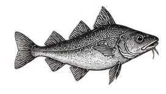

Découvrir
Le meilleur de la mer
Chez L'Océan, chaque poisson est choisi sur l'étal et cuisiné à la commande, dans la pure tradition méditerranéenne. Crustacés, grillades et plateaux généreux se dégustent en terrasse ou en famille, accompagnés d'un bon verre de thé à la menthe.